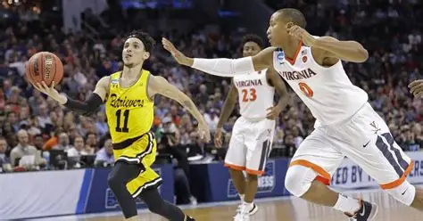

Cinderella Stories
Cinderella Stories are something specil to watch in the March Madness Tournament. A cinderella run is when a lower seeded team goes on to defeat many higher ranked schools and pave their own path in the bracket. Although some might not win the whole thing, it is a memory that the athletes will never forget along with the fans.
Most Recent Cinderlla Stories
High Point
In 2026,Upsetting Wisconsin in a 12-5 matchup to win their first March Madness game in program history.

Saint Peters
In 2022,Upsetting Kentucky in a 15-2 matchup to win their first March Madness game in program history.

UMBC
In 2018,Upsetting Virgina in a 16-1 matchup to win their first March Madness game in program history.
They also became the first ever team to upset a #1 seed in the first round writing history.
